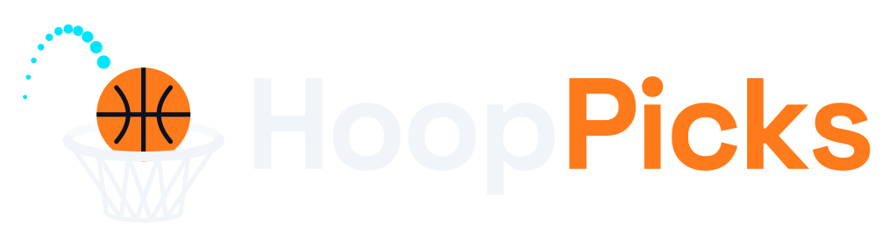
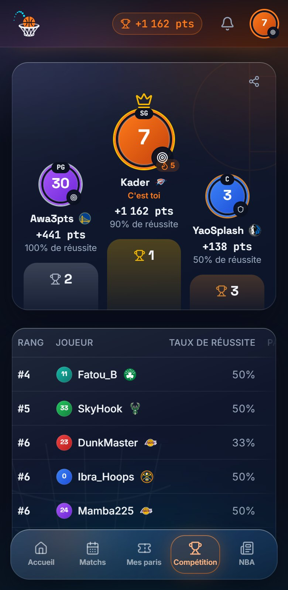
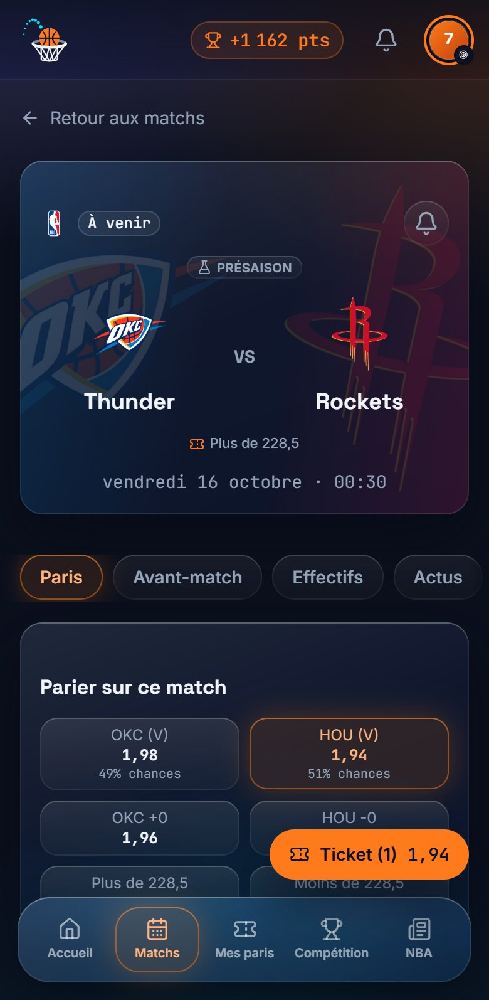
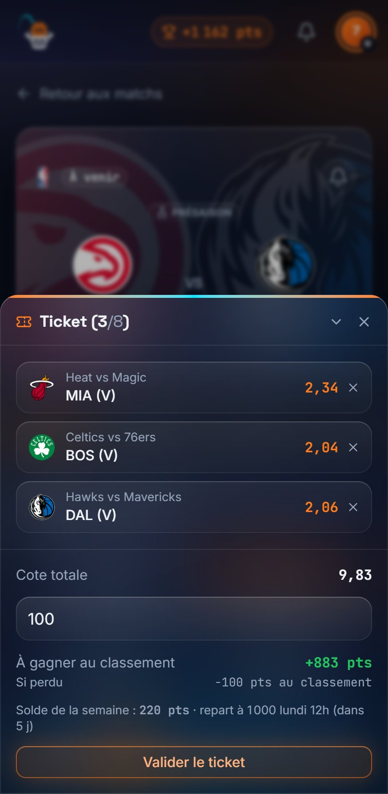
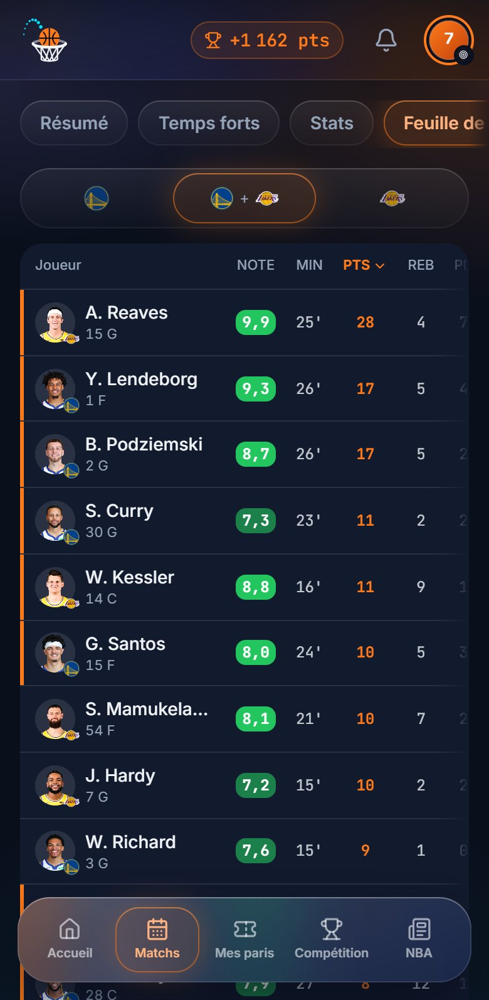
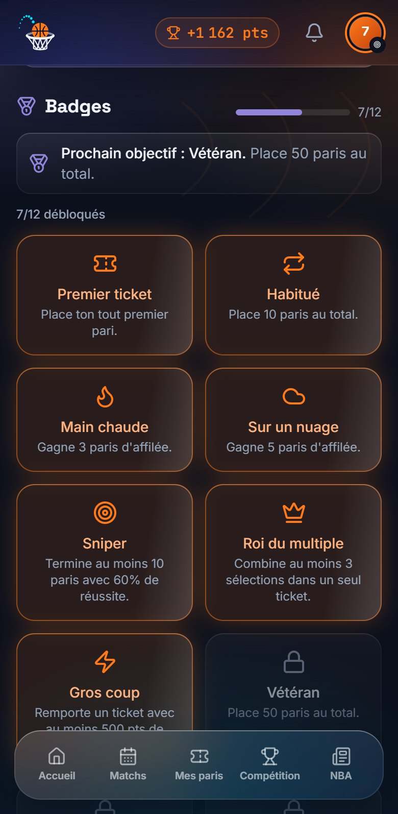
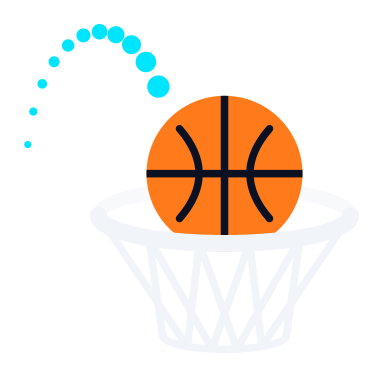

Tout ce qu'il faut savoir pour parier, grimper au classement et battre tes amis, avec des points virtuels : aucun argent réel n'est en jeu.


HoopPicks est un jeu de pronostics sur les matchs NBA. Ce manuel suit l'ordre dans lequel tu découvriras l'app : de ton premier ticket jusqu'au titre de champion de la semaine.
Créer ton compte, installer l'app sur ton téléphone et trouver ton chemin.
Depuis la page d'accueil, touche Créer un compte et renseigne un pseudo, une adresse e-mail et un mot de passe de 8 caractères au moins. Tu es connecté tout de suite.
Un e-mail de confirmation t'est envoyé. Tant que tu n'as pas cliqué sur le lien, une bannière te le rappelle, mais elle ne bloque rien : tu peux jouer normalement. « Renvoyer le lien » permet de le redemander.
Mot de passe oublié ? Le lien Mot de passe oublié de la page de connexion t'envoie un e-mail de réinitialisation, valable 30 minutes.
Ta connexion dure 60 jours et se prolonge à chaque visite : tant que tu ouvres l'app au moins une fois tous les deux mois, tu restes connecté.
HoopPicks s'installe sur l'écran d'accueil comme une vraie application, sans passer par un store.
Touche Installer quand l'app le propose, ou ouvre le menu de Chrome → Installer l'application.
Dans Safari, touche Partager puis Sur l'écran d'accueil. Sur iPhone, les notifications ne marchent que dans l'app installée.
Cinq rubriques, dans la barre du bas sur téléphone et à gauche sur ordinateur :
Ton compte (profil, paramètres, Nous écrire, aide) est dans le menu de ton avatar, en haut à droite. Juste à côté, la pastille affiche tes points de classement et ton rang.
C'est ta page d'accueil une fois connecté. Tu y trouves :
Chaque semaine, tout le monde repart à égalité. C'est la règle qui fait tout HoopPicks.
Tout le monde repart avec 1000 points, quel que soit son solde de la semaine passée. Midi, parce que les matchs de la nuit sont finis et les suivants pas encore commencés.
Tes 1000 points servent à miser pendant la semaine. Le solde baisse à chaque mise et ne remonte que si un ticket est remboursé. Un ticket gagné ne recrédite pas le solde : son bénéfice part au classement.
Pourquoi ? Sans ça, celui qui gagnait tôt dans la semaine misait de plus en plus gros. Ici, chacun a exactement 1000 points à risquer par semaine.
Tu peux parier sur tous les matchs qui commencent avant la fin de la semaine (lundi 12h GMT). Les matchs suivants s'ouvrent la semaine d'après : un pari compte toujours pour la semaine où il est posé.
Un récap de ta semaine arrive dans la cloche chaque lundi.

Chaque semaine vaut ton bénéfice net : les bénéfices de tes tickets gagnés, moins les mises de tes tickets perdus. Une semaine ne descend jamais sous 0. Ton classement de la saison additionne tes semaines : une mauvaise semaine ne te fait jamais perdre les points déjà acquis.
Mise 100, cote 2,50 : gain 250, soit +150 au classement.
Mise 100 : −100 sur ta semaine (jamais sous 0 au total de la semaine).
La mise revient sur ton solde, 0 au classement.
Choisis tes cotes, compose ton ticket, valide. Le reste se règle tout seul.
Qui gagne le match.
Un handicap : avec « BOS −4,5 », Boston doit gagner d'au moins 5 points.
Plus ou moins de points marqués à deux qu'une ligne (ex. 228,5).
Plus ou moins de X points, rebonds, passes, tirs à 3 points ou points + rebonds + passes, pour les meilleurs joueurs de chaque équipe. La ligne est leur moyenne de la saison.
Un multiplicateur. Avec une cote de 1,80, 100 points misés en rapportent 180 si le pari passe : 80 points de bénéfice au classement. Plus la cote est haute, moins l'issue est probable.
Chaque soir, le choc de la soirée a sa cote « vainqueur » boostée de +15 %. Un ticket qui la contient est limité à 100 points de mise.
Les tickets se règlent automatiquement, quelques minutes après la fin des matchs. Rien à faire de ton côté.
Toutes les sélections sont bonnes. Ton bénéfice (gain − mise) compte au classement de la semaine.
Au moins une sélection est fausse. La mise est retirée de ta semaine, jamais en dessous de 0.
Tout tombe pile sur la ligne, ou le joueur n'a pas joué. La mise revient sur ton solde.
Dans un combiné, une sélection qui tombe pile sur la ligne compte pour une cote de 1,00 : le ticket reste gagnant si les autres le sont, et le gain est recalculé sans elle.
Dans Mes paris, tu suis chaque ticket en direct :
Un ticket réglé peut être partagé par lien, avec un aperçu en image sur WhatsApp.
Tout pour décider avant le coup d'envoi, et tout suivre pendant le match.
Le score, en direct pendant le match, avec le quart-temps et le chrono. La phase (présaison, Coupe NBA, playoffs…), et tes paris en attente sur ce match.
Touche la cloche pour être prévenu :

| Moment | Ce que tu y trouves |
|---|---|
| Avant le match | Paris (cotes et paris joueurs), Avant-match (forme des deux équipes, dernières confrontations), Effectifs (rotation probable et grands absents), Actus. |
| Pendant et après | Résumé (quarts-temps, homme du match, probabilité de victoire, meilleurs joueurs), Temps forts, Stats, Feuille de match, Tirs sur le terrain, Actus. |
Chaque joueur reçoit une note sur 10, calculée d'après sa feuille de match. Le mieux noté est l'homme du match.
Classement, ligues entre amis, duels en face à face et pronostics de saison.
Le meilleur score de la semaine passée a son bandeau doré en tête du classement et une couronne à côté de son pseudo. Chaque ligue a aussi son champion.
Crée une ligue privée, ou rejoins-en une avec un code d'invitation à 6 caractères ou un lien. Dans une ligue :
Partage l'invitation depuis la page de la ligue. Tu peux la quitter à tout moment.
Défie un joueur sur la semaine en cours, depuis Compétition → Duels ou son profil. S'il accepte, celui qui a le plus de points de classement à la fin de la semaine gagne. Un duel par adversaire et par semaine.
Dans Compétition → Saison, choisis le champion NBA, les finalistes de l'Est et de l'Ouest et le meilleur bilan. Modifiables jusqu'à une semaine après le premier match de saison régulière. Classement à part.
Ton avatar, tes stats, ton palmarès et tes badges.
Touche un pseudo pour ouvrir un profil : points, rangs, séries, palmarès, derniers tickets réglés (jamais ceux en attente), badges débloqués, ligues en commun et votre face-à-face de la semaine. Tu peux le défier en duel depuis là.

| Badge | Pour le débloquer |
|---|---|
| Premier ticket | Place ton tout premier pari. |
| Habitué | 10 paris placés. |
| Vétéran | 50 paris placés. |
| Main chaude | 3 paris gagnés d'affilée. |
| Sur un nuage | 5 paris gagnés d'affilée. |
| Sniper | Au moins 10 paris réglés avec 60 % de réussite. |
| Badge | Pour le débloquer |
|---|---|
| Roi du multiple | Un ticket d'au moins 3 sélections. |
| Gros coup | Un ticket avec au moins 500 points de bénéfice. |
| Gros joueur | 2000 points misés au total. |
| Fidèle | 10 sélections en faveur de ton équipe favorite. |
| Lucide | Un ticket gagné en pariant contre ton équipe favorite. |
| Contre la foule | Une sélection gagnante que moins de 20 % des joueurs avaient choisie. |
Les infos qui comptent avant de parier : actus, blessés, statistiques.
Les dernières news NBA d'ESPN, traduites en français, avec un raccourci vers le prochain match des équipes concernées.
Meneurs statistiques, blessés, recherche, et comparateur de deux joueurs. Touche un joueur pour sa fiche : photo, moyennes, derniers matchs.
Le classement officiel par conférence. Une équipe ouvre sa page : effectif, prochains et derniers matchs, actus.
Jette un œil aux blessés et à l'onglet Effectifs du match : un titulaire absent change tout, surtout pour les paris joueurs.
Notifications, réglages, et comment nous joindre.
La cloche en haut de l'écran regroupe tes notifications : résultats et avancée de tes paris, coups d'envoi, matchs suivis, ton équipe favorite, duels, ligues, réponses de l'équipe. L'ouvrir marque tout comme lu.
Pour les recevoir aussi sur ton téléphone, active les notifications push dans Paramètres (sur iPhone, depuis l'app installée).
Changer ou réinitialiser ton mot de passe déconnecte tes autres appareils, par sécurité.
Dans le menu de ton avatar : envoie un bug, une question ou une idée. La réponse arrive dans ta cloche, et la conversation reste sur la page. En cas de plantage, « Signaler le problème » ouvre le formulaire déjà rempli.
Les règles du jeu et les questions fréquentes, avec une recherche (pas besoin des accents : « rembourse » trouve « remboursé »). Ce manuel y est aussi.
La page À propos rappelle qu'aucun argent réel n'est en jeu ; la page Confidentialité détaille les données conservées et ce que les autres joueurs voient. HoopPicks est un projet indépendant, non affilié à la NBA, à ses équipes ni à ESPN.

Pose ton premier ticket, invite tes amis dans une ligue, et vise la couronne du champion de la semaine.